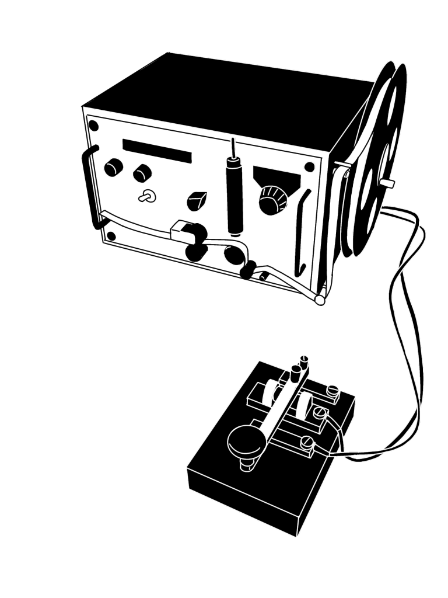
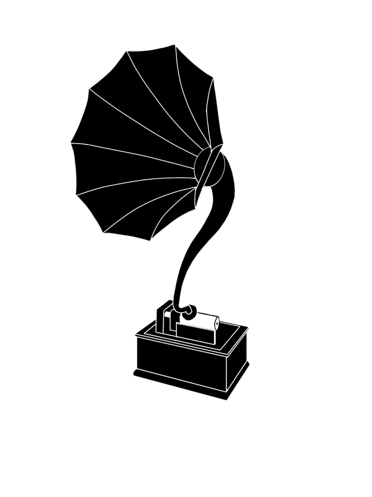
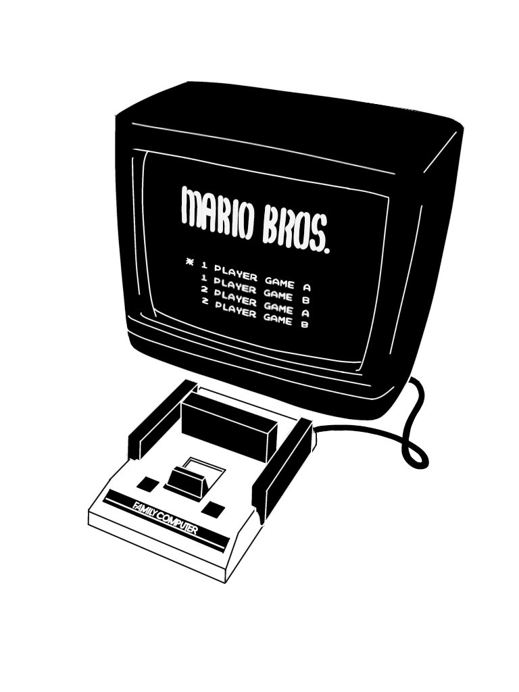

| 音 | 拍 | ||||||||
|---|---|---|---|---|---|---|---|---|---|
|
「タイプライター」
活躍：1930～50年代 キーボードを打鍵することで 活字を紙に打ち付け 文字や記号を印字する機械 |
|||||||||
|
「黒電話」
活躍：1950～70年代 真っ黒なボディが特徴の ダイヤル式電話機 |
|||||||||
|

「モールス電信機」
活躍：19世紀後半～20世紀初頭 『トン』・『ツー』で構成された モールス符号を使って電気信号で 送受信する通信機器 |
|||||||||
|

「蓄音機」
活躍：20世紀初頭 電気を使わずに音声を 録音・再生する機械 |
|||||||||
|

「ファミコン」
活躍：1980年代 任天堂が1983年に発売した 家庭用ゲーム機。通称ファミコン |
|||||||||